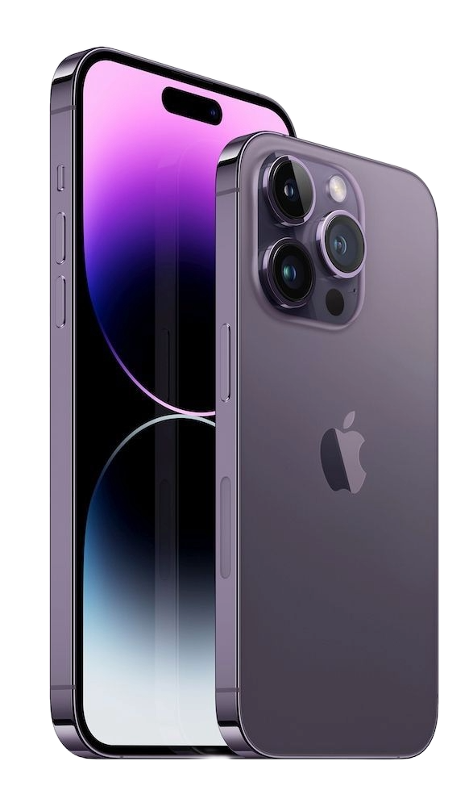
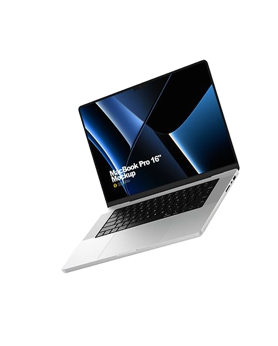
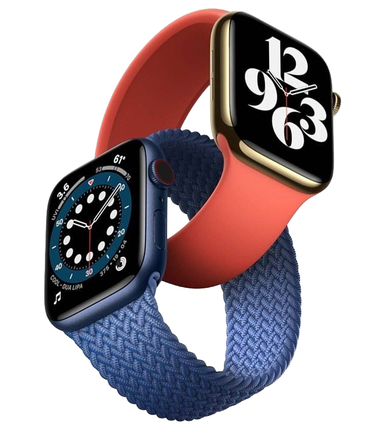
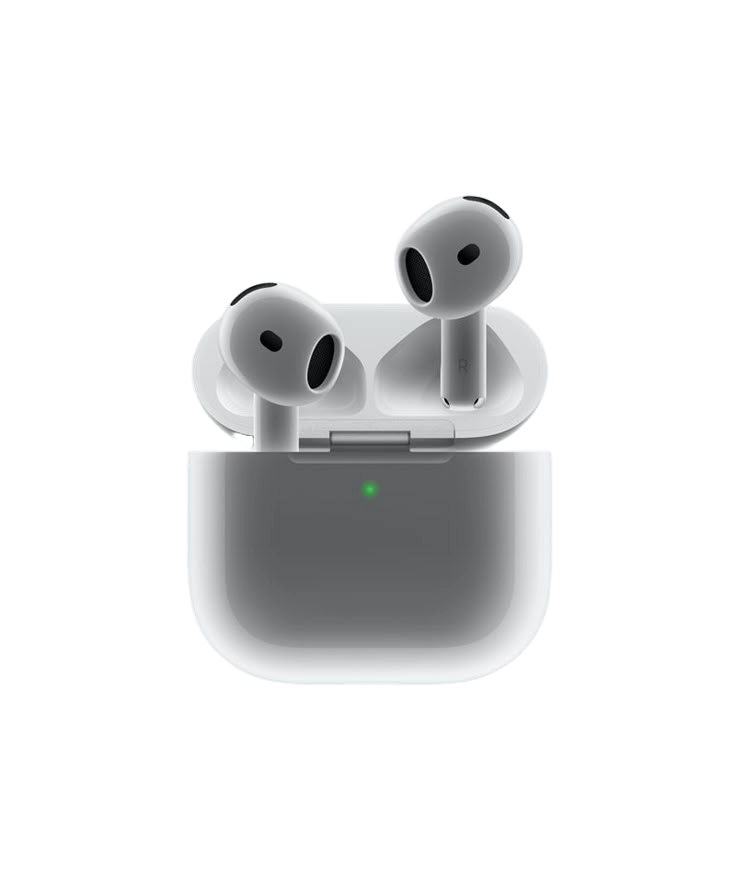

iPhone
Ремонт любой сложности

iPad
Стекла и АКБ

Mac
Сервис и апгрейд

Watch
Восстановление

AirPods
Чистка и звук
Ремонт любой сложности
Стекла и АКБ
Сервис и апгрейд
Восстановление
Чистка и звук
Ваш iPhone или MacBook — это больше, чем просто гаджет. Это важная часть вашей работы, творчества и связи с миром. Мы в Айфон докторе + понимаем ценность этих инструментов, поэтому возвращаем технику Apple к жизни, сохраняя её первозданное качество. Техника Apple — это торжество инженерной мысли, не терпящее дилетантства. Мы строго придерживаемся регламентов производителя и используем прецизионное оборудование для диагностики и восстановления. В работе применяются только проверенные комплектующие, а каждый этап ремонта проходит под контролем профессионалов. Мы предлагаем прозрачный сервис и даем честную гарантию на каждый винтик. С нами вы всегда точно знаете, за что платите, и получаете результат, на который можно положиться.
Адрес: г. Москва, ул. Проспект мира, д. 97
Телефон: +7 (991) 240-10-00
Проблема: В момент запуска двигателя в электросети автомобиля происходит скачок напряжения. Если iPhone уже подключен, этот удар принимает на себя контроллер питания (чип U2/Tristar). Золотое правило: Сначала завели мотор, потом вставили кабель в телефон. И наоборот: сначала вынимаем кабель, потом глушим машину.
Модуль TrueDepth — самая хрупкая деталь. Даже если стекло целое, микро-смещение линз после удара приводит к ошибке «Face ID недоступен». Совет: Носите чехлы с высокими бортиками вокруг экрана. И помните: ремонт Face ID возможен, но это ювелирная работа под микроскопом, которую мы умеем делать.
Если кабель "болтается" или зарядка идет только под углом — в 90% случаев там спрессованная пыль из карманов, а не поломка разъема. Совет: Не ковыряйте там зубочистками! Можно загнуть тончайшие контакты. Приносите к нам — чистка занимает 2 минуты и часто спасает от замены всего шлейфа.